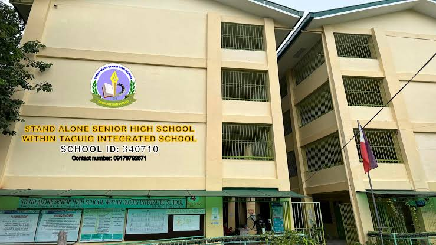
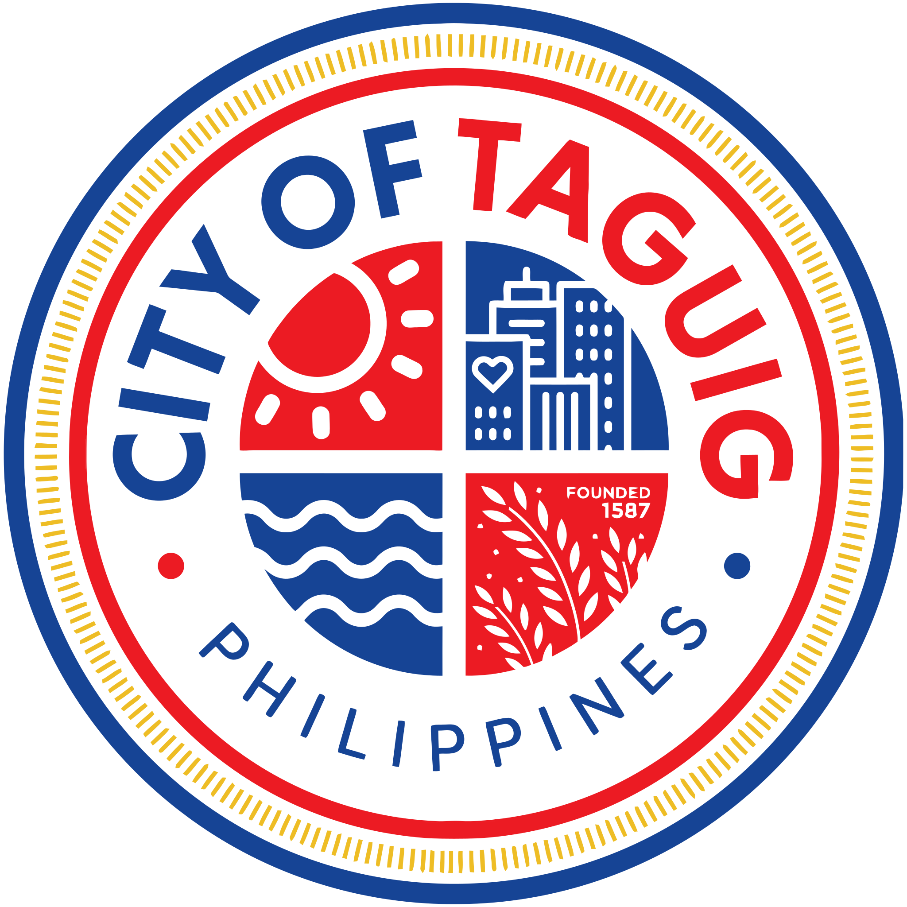
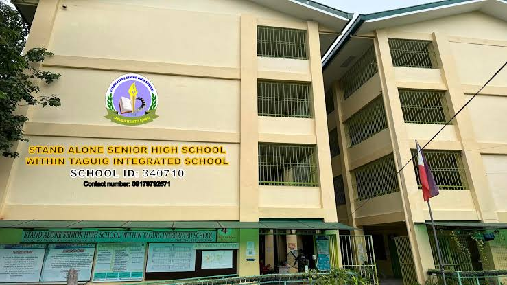
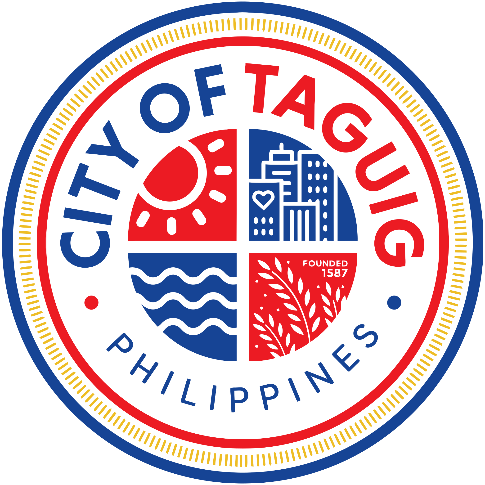

GRADE 11-PRODUCTION

GALLERY Calendar
  
 
DESCRIPTION :Stand-alone Senior High School (SHS), specifically the one within Taguig Integrated School, is a secondary school that focuses solely on Grades 11 and 12, and is located on a separate campus from the Junior High School (JHS). It has its own school administration and principal, distinct from the JHS. This particular SHS in Taguig offers various academic strands like HUMSS, ABM, STEM, and GAS.
Dakay Miguel Rossen D.
NAME